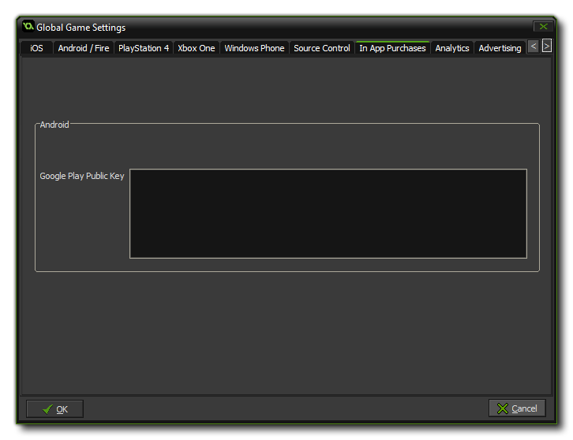

 This tab is for
setting up certain In App Purchase options for Android,
where you can supply your Android Public Key for Google Play
(this is a key code supplied by Google as a protection method for
your game). This licence can be found by going to your Google Play
Developers Page and then selecting the option Edit
profile. Once on the profile page, scroll down to the section
titled "Licensing & In-app Billing" and there you should
find the Public key that is needed for this functionality to be
enabled. Note that to use In App Purchases in any Android project
you must have installed the Google Services extension and the
Google IAP extension (see here for
more details).
For more detailed information on in app purchases, the available
GameMaker: Studio functions and proprietary server setup,
please see the section Reference -
In App Purchases.
NOTE: This functionality is limited to the Professional
Version of GameMaker: Studio.